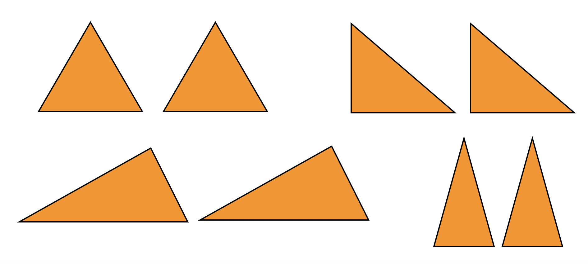
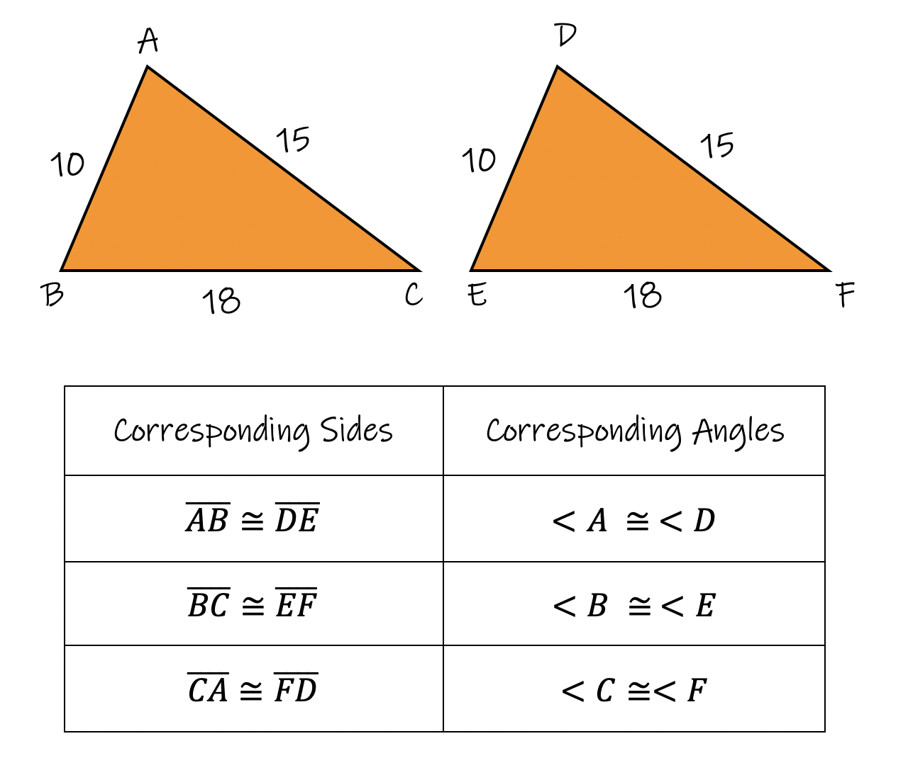
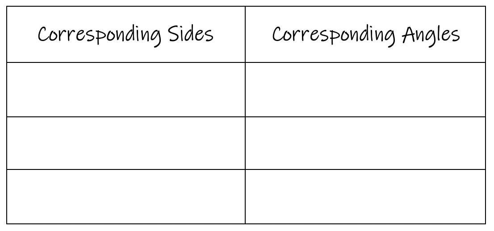

Two triangles are considered to be "congruent" if they are exactly the same size and shape, or identical to eachother. The two triangles will have the same side-lengths and the same angle degrees. The triangles may be oriented differently which makes matching up the triangles a little more challenging, but not too hard.
A triangle has six measurements that defines the triangle: 3 sides that each have a length associated with them, and three angles that have their own degrees. We must compare the six measurements from one triangle to a second triangle in order to determine if they are congruent to eachother. When we do this, it is called "Matching Corresponding Congruent parts".
This may all sound confusing, but it's a lot easier if we look at some examples.
Example 1: Examples of congruent triangles (they occur in pairs) 
As you look at the two examples, you will see it's not hard at all to tell if two triangles are congruent or not.
One of the main tasks when working with congruent triangles is learning how to write down the corresponding congruent parts. We will focus on this topic next.
Example 1: Given 2 congruent triangles, match up and list their corresponding congruent parts.

The table below is the standard way of listing the corresponding congruent parts. Side lengths are on the left while angles are on the right.

The symbols in the example above are the following:
Congruent: ≅
Angle: <
Segment: ⁻
Segments must have a bar across the top of their names and angles must have the angle symbol infront of their names, and the congruent symbol always goes between the two parts that are congruent (either the same length or the same degrees).
Let's look at another example:
Congruent triangles can be found out in the real world everywhere you look. Some examples are below:
Can you find the congruent triangles in each photo?